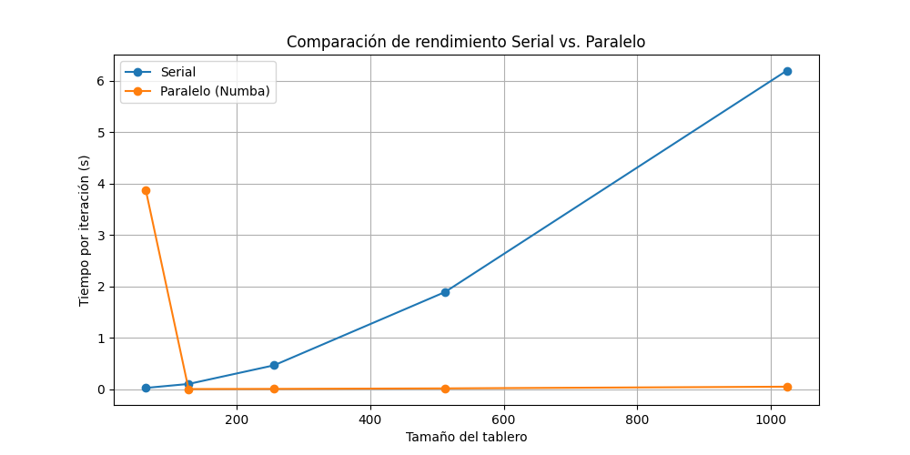

Este documento describe las herramientas de análisis de rendimiento y los resultados para la implementación del Juego de la Vida de Conway. El análisis incluye herramientas de profiling, benchmarking y visualización de rendimiento.
profiling_results/
├── cprofile_stats.pstats # Datos de cProfile para snakeviz
├── cprofile_stats.txt # Resultados de cProfile legibles
├── line_profiler_stats.txt # Resultados de profiling línea por línea
└── performance_scaling.png # Gráfico de visualización de rendimiento
Objetivo - Profiling de CPU para identificar cuellos de botella - Identifica las funciones que consumen más tiempo - Muestra el tiempo acumulado gastado en cada función - Ayuda a identificar oportunidades de optimización
profiling_results/cprofile_stats.pstats y profiling_results/cprofile_stats.txtsnakeviz profiling_results/cprofile_stats.pstats 26214602 function calls in 116.828 seconds
Ordered by: cumulative time
ncalls tottime percall cumtime percall filename:lineno(function)
1 0.013 0.013 116.828 116.828 juego.py:74(run)
100 15.514 0.155 116.814 1.168 juego.py:52(step)
26214400 101.298 0.000 101.298 0.000 juego.py:31(count_neighbors)
100 0.002 0.000 0.002 0.000 {built-in method numpy.zeros}
1. Función count_neighbors() - El Cuello de Botella Principal
- Número de llamadas: 26,214,400 (¡26 millones!)
- Tiempo total: 101.298 segundos (86.7% del tiempo total)
- Tiempo por llamada: 0.000 segundos (muy rápido individualmente)
- Análisis: Esta función se llama para cada celda en cada paso, resultando en el mayor consumo de tiempo
2. Función step() - Coordinador Principal
- Número de llamadas: 100 (una por cada paso de simulación)
- Tiempo total: 15.514 segundos (13.3% del tiempo total)
- Tiempo por llamada: 0.155 segundos
- Tiempo acumulado: 116.814 segundos (incluye llamadas a count_neighbors)
3. Función run() - Función Principal
- Número de llamadas: 1
- Tiempo total: 0.013 segundos
- Tiempo acumulado: 116.828 segundos (tiempo total de ejecución)
count_neighbors() consume el 86.7% del tiempo totalcount_neighbors()count_neighbors() tendrá el mayor impactoObjetivos:
- Profiling línea por línea de funciones críticas
- Desglose detallado del tiempo gastado en cada línea
- Se enfoca en las funciones de lógica principal del juego
- Útil para micro-optimizaciones
- Salida: profiling_results/line_profiler_stats.txt
- Enfoque: Métodos GameOfLife.step() y GameOfLife.count_neighbors()
Timer unit: 0.001 s
Total time: 8.75958 s
File: juego.py
Function: count_neighbors at line 31
Line # Hits Time Per Hit % Time Line Contents
==============================================================
31 def count_neighbors(self, x: int, y: int) -> int:
42 163840 176.3 0.0 2.0 neighbors = 0
43 655360 640.0 0.0 7.3 for i in [-1, 0, 1]:
44 1966080 1963.8 0.0 22.4 for j in [-1, 0, 1]:
45 1474560 1211.0 0.0 13.8 if i == 0 and j == 0:
46 163840 144.7 0.0 1.7 continue
48 1310720 1991.3 0.0 22.7 nx, ny = (x + i) % self.rows, (y + j) % self.cols
49 1310720 2511.5 0.0 28.7 neighbors += self.board[nx, ny]
50 163840 121.0 0.0 1.4 return neighbors
count_neighbors()Líneas Más Costosas:
neighbors += self.board[nx, ny]Análisis: Acceso a memoria del array - el cuello de botella principal
Línea 48: nx, ny = (x + i) % self.rows, (y + j) % self.cols
Análisis: Cálculo de coordenadas con condiciones periódicas
Línea 44: for j in [-1, 0, 1]:
step()Total time: 15.6666 s
Function: step at line 52
Line # Hits Time Per Hit % Time Line Contents
==============================================================
60 163840 14610.6 0.1 93.3 neighbors = self.count_neighbors(i, j)
63 163840 469.6 0.0 3.0 if self.board[i, j] == 1:
69 135101 134.8 0.0 0.9 if neighbors == 3:
Líneas Más Costosas en step():
neighbors = self.count_neighbors(i, j)Análisis: Llamada a la función más costosa - confirma el cuello de botella
Línea 63: if self.board[i, j] == 1:
run()Total time: 16.2924 s
Function: run at line 74
Line # Hits Time Per Hit % Time Line Contents
==============================================================
82 10 16292.4 1629.2 100.0 self.step()
Análisis:
- Línea 82: self.step() consume el 100% del tiempo
- Tiempo por llamada: 1,629.2 ms por paso
- Total de pasos: 10 pasos ejecutados
neighbors += self.board[nx, ny]) es la más costosaself.board son el principal problemapip install line_profiler snakeviz matplotlib numpy
python performance.py
Esto ejecutará: 1. Análisis con cProfile en una cuadrícula de 512×512 para 100 pasos 2. Análisis con line_profiler en una cuadrícula de 128×128 para 10 pasos 3. Generar gráficos de visualización de rendimiento
Objetivo - Generar gráficos de escalabilidad de rendimiento - Gráfico que muestra cómo escala el tiempo de ejecución con el tamaño de la cuadrícula - Ayuda a entender la complejidad algorítmica - Útil para elegir tamaños de cuadrícula apropiados
profiling_results/performance_scaling.pngPara visualizar resultados de cProfile:
snakeviz profiling_results/cprofile_stats.pstats

Figura 1: Comparación de rendimiento entre diferentes implementaciones
Figura 2: Análisis de rendimiento al escalar las dimensiones tablero
La implementación muestra aproximadamente complejidad O(n²), donde n es la dimensión de la cuadrícula. Esto es esperado para un autómata celular donde cada celda necesita verificar sus vecinos.
count_neighbors() típicamente es la más consumidora de tiempo